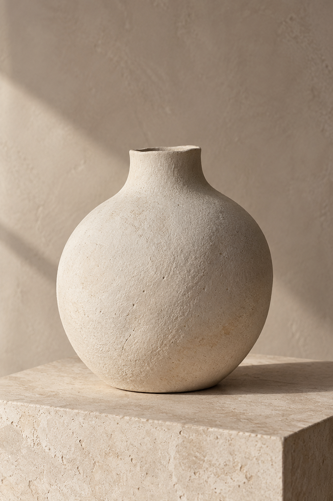
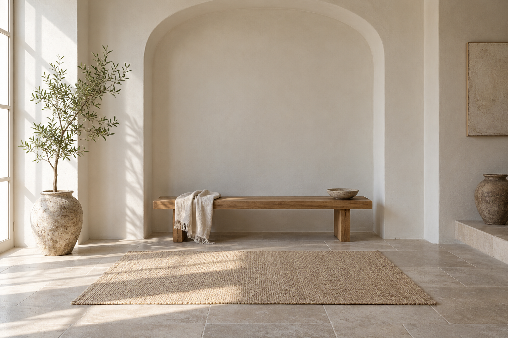
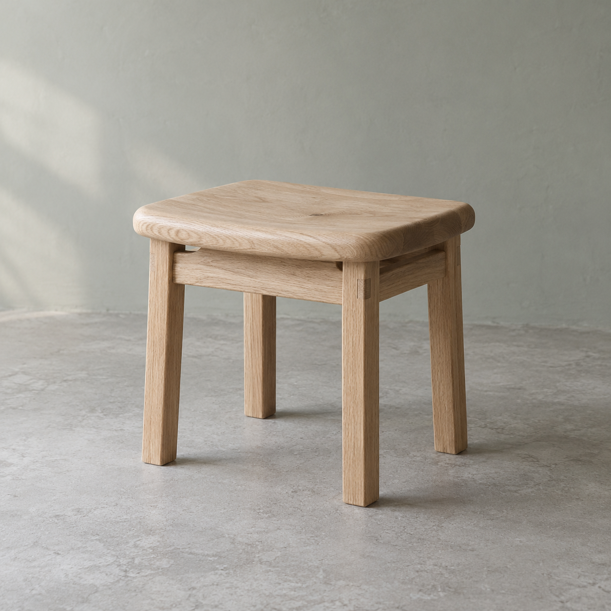

Vessel study
InspectA chalk-colored ceramic form, shaped by a soft edge and the light around it.
Theme 08 Gallery Draft 0.1.0
An image-led design language
Make room for the work.
Independent form studies
Collection 001
A fictional collection
An object. A place. A quiet relationship between material, proportion, and the spaces we inhabit.
Explore the three studies
Photography-style studies of fictional forms.
No real products, makers, or commissioned work.
01 / Selected studies
A small collection to explore at your own pace. Inspect a study to read its material notes and the intention behind the image.
With JavaScript off, all studies and their details remain readable. Search and view controls are unavailable.
Try another title or description, or return to the complete collection.

A chalk-colored ceramic form, shaped by a soft edge and the light around it.

A simple oak seat. The grain, joinery, and familiar weight of an everyday object.
An architectural alcove in plaster and timber. A study of how daylight gives a quiet room its shape.
02 / Closer looking
Three views, one place to look closer. Filters change the collection above; the open study stays available here.
Loading image…
Objects / Study 01
The simplest shape can hold your attention.
A matte, chalk-colored form gives light a surface to describe. The image explores a soft silhouette, an understated material, and the space around an object.
This is an illustrative study, not an available product or a record of a maker’s work. Material and composition notes describe the fictional image direction.
Back to the collectionLoading image…
Objects / Study 02
A familiar object, carefully observed.
Warm oak, clear construction, and a grounded silhouette. This study considers the visual weight of a useful object without adding decoration around it.
No real manufacturer, certification, dimensions, or performance is represented. The seat is an illustrative form, not an offer for sale.
Back to the collectionLoading image…
Spaces / Study 03
A room described by light.
Pale plaster meets warm timber. A quiet alcove becomes a place to notice proportion, the depth of a surface, and the way daylight changes the feeling of a space.
This is not a completed building, commissioned interior, or photograph of a real location. The hero and this detail reuse the same original image.
Back to the collection03 / The supporting interface
Simple controls and readable type support the images. The density preference changes only this specimen’s inset.
Neutral component specimen
Comfortable density · 24px panel inset
Warning specimen: review the proposed crop.
Error specimen: the source image is unavailable.
Information specimen: this collection is fictional.
Type & language
Room to
look closer.
Inter brings a quiet, consistent voice to the interface. Installed local faces or system fallbacks render this preview; no font files are downloaded.
Một khoảng lặng để nhìn kỹ hơn. Hình dáng, chất liệu và ánh sáng tạo nên câu chuyện của mỗi vật thể.
GALLERY-INDEPENDENT-FORM-STUDIES-COLLECTION-REFERENCE-0001
3 fictional studies / Local browsing only
| Study | Design intention | Reference |
|---|---|---|
| Vessel | A soft silhouette with generous surrounding space | GAL-01 / 024 |
| Seat | Let material and construction carry the image | GAL-02 / 016 |
| An intentionally longer material and composition note for the fictional architectural alcove | Keep the complete context readable without clipping important content | GALLERY-COLLECTION-COMPONENT-REFERENCE-0003 |